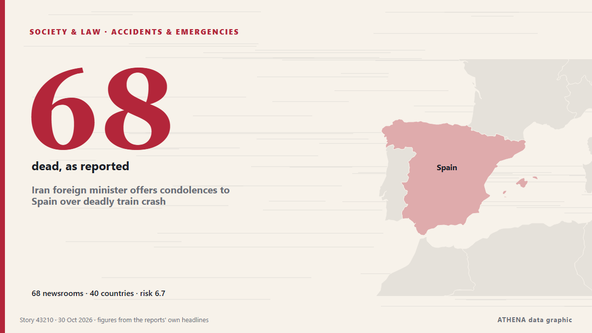

Iran foreign minister offers condolences to Spain over deadly train crash

Portugal’s government announced that it has offered Spain support through organisations such as CP and Infraestruturas de Portugal, following the train crash in Toledo today that has claimed at least. de Portugal Resident
Informado de forma independiente por 68 medios de 40 países desde el 28 oct; el primero fue Portugal Resident; la cobertura va perdiendo fuerza. ATHENA califica el riesgo como alto (6.7/10), sobre todo por la gravedad del daño descrito y su alcance geográfico y sectorial. La confianza es del 89 % (alta): lo corroboran 68 medios independientes, con una fiabilidad media de las fuentes del 75 %. Medios por país: Estados Unidos (6), Reino Unido (5), China (5). Cobertura: del 28 oct al 29 oct, 16 horas.
Por qué importa: Los cambios legales y de política modifican derechos, obligaciones y servicios públicos para las personas afectadas.
Qué ha cambiado: 36 informaciones nuevas de 26 redacciones en las 24 horas hasta el 30 oct.
Primer titular: What we know about the deadly train crash in Spain
Los titulares se muestran en inglés, tal como se publicaron.
De un vistazo
Seleccionado, puntuado y redactado por la metodología publicada de ATHENA. Ningún editor interviene en eventos concretos. Cómo se elabora ›
| 28 Oct 13:59 UTC | 6 |
|---|---|
| 28 Oct 15:59 UTC | 5 |
| 28 Oct 17:59 UTC | 5 |
| 28 Oct 19:59 UTC | 6 |
| 28 Oct 21:59 UTC | 7 |
| 28 Oct 23:59 UTC | 2 |
| 29 Oct 01:59 UTC | 5 |
| 29 Oct 03:59 UTC | 7 |
| 29 Oct 05:59 UTC | 14 |
| 29 Oct 07:59 UTC | 14 |
| 29 Oct 09:59 UTC | 7 |
| 29 Oct 11:59 UTC | 5 |
| 29 Oct 13:59 UTC | 7 |
| 29 Oct 15:59 UTC | 2 |
| 29 Oct 17:59 UTC | 2 |
| 29 Oct 19:59 UTC | 2 |
| 29 Oct 21:59 UTC | 1 |
| 29 Oct 23:59 UTC | 1 |
| 30 Oct 01:59 UTC | 0 |
| 30 Oct 03:59 UTC | 0 |
| 30 Oct 05:59 UTC | 3 |
| 30 Oct 07:59 UTC | 2 |
| 28 Oct 14:06 UTC | 3.5 |
|---|---|
| 28 Oct 14:11 UTC | 4.3 |
| 28 Oct 15:17 UTC | 6.4 |
| 29 Oct 03:07 UTC | 7.0 |
| 29 Oct 05:56 UTC | 7.5 |
| 30 Oct 08:24 UTC | 6.4 |
| 30 Oct 09:02 UTC | 6.7 |
Por qué estas cifras
Importancia
Riesgo
Confianza
La cobertura: quién informó y cuándo
titular tal como se publicó · abre el original- Portugal Resident · PortugalPortugal offers help in wake of Spanish train carnage
- The Portugal News · PortugalPortugal sends condolences to Spain after train crash
- Anadolu Agency (English) · TurquíaTurkish president offers condolences to Spain over deadly train crash
- Euronews Albania (EN) · AlbaniaTragic Train Crash in Spain, Begaj: Albania Stands in Full Solidarity with the Spanish People
- Daily Maverick · SudáfricaIN PICTURES: Deadly train crash in Spain and more from around the world
- Anadolu Agency (English) · TurquíaTürkiye offers condolences to Spain over deadly train crash
- The New York Times (World) · Estados UnidosSpain’s transportation minister described what led to the crash.
- The New York Times (World) · Estados UnidosSpain’s Transportation Minister Said Incorrect Instructions Led to Train Crash
- The New York Times (World) · Estados UnidosWhat We Know About the Deadly Train Crash in Spain
- BBC News · Reino UnidoWatch: At the scene of Spain's deadly train crash
- Hespress English · MarruecosKing Mohammed VI sends condolences to Spain's King Felipe VI over deadly train crash
- The Guardian · Reino Unido‘It all happened in a split-second’: survivors recount details of deadly train crash in Spain
- TASS (English) · RusiaSpain declares three days of mourning after deadly train crash — prime minister
- The Straits Times · SingapurSpanish town rallies to help victims of deadly train crash
- Dominican Today · República DominicanaAbinader expresses condolences after deadly train crash in Spain
- The New York Times (World) · Estados UnidosSpain Train Crash Kills at Least 68
- Sydney Morning Herald · Australia‘Inexplicable’: How the catastrophic train crash in Spain unfolded
- NBC News (World) · Estados UnidosRescue efforts continue into the night after deadly train collision in Spain
- BBC News · Reino UnidoBloodied, dazed and angry - how passengers' rail journey turned to disaster in Spain
- Xinhua (English) — page reader · ChinaExplainer: Two deadly crashes in nine months: What's happening to Spain's high-speed rail?
- ABC News Australia · AustraliaCrash survivors recount chaotic scenes in Europe's worst train disaster since 2013
- Xinhua (English) — page reader · ChinaExplainer: Two deadly crashes in nine months: What's happening to Spain's high-speed rail?
- PBS NewsHour World · Estados UnidosShock, anger and mourning in Spain after 2nd major train crash this year
- Sydney Morning Herald · AustraliaTourist says everything started 'falling apart' after deadly train crash in Spain
- Sydney Morning Herald · AustraliaFar-right groups and police clash in Madrid during deadly train crash protests
- Mainichi (English) · JapónHigh-speed train collision kills at least 68 in Spain's 2nd deadly rail crash this year
- New Straits Times · MalasiaSpanish town rallies to help victims of deadly train crash
- The Straits Times · SingapurWhat we know about the deadly train crash in Spain
- Xinhua (English) — page reader · ChinaSpanish PM declares three days of national mourning after deadly train collision
- Al Jazeera English · CatarRiot police deployed in Madrid as protests erupt over deadly train crash
- CGTN (World) · ChinaTwo deadly crashes this year raise concerns over Spain's rail security
- Khaosod English · TailandiaHigh-speed train collision kills at least 68 in Spain’s 2nd deadly rail crash this year
- CGTN (World) · ChinaNumerous injured in Spain train crash: mayor
- RTÉ News · IrlandaSpain demands answers as rail disaster death toll rises
- eNCA · SudáfricaSpain mourns after latest train tragedy kills 68
- Gulf News · Emiratos Árabes UnidosSpain mourns after latest train tragedy kills 68
- The Independent · Reino UnidoSpain reckons with 2nd deadly train crash of the year ahead of national election
- The Guardian · Reino UnidoSpain begins mourning period as search continues for train crash victims
- Club of Mozambique · MozambiqueSpain begins three days of mourning after train crash kills dozens
- Oman Observer · OmánSpain mourns after latest train tragedy kills 68